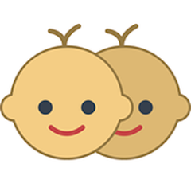

Professional Profile
- Technical depth meets leadership breadth: Equally comfortable architecting distributed systems, writing production code, and leading cross-functional teams through complex technical initiatives.
- Proven scaling expertise: Successfully grew engineering teams from 2 to 20+ while maintaining code quality, team velocity, and zero-downtime production deployments across multiple high-stakes environments.
- Pragmatic problem solver: Balance cutting-edge technology adoption with maintainable, well-tested solutions—prioritizing business impact over technical complexity.
- Effective communicator and mentor: Bridge technical and non-technical stakeholders seamlessly while fostering psychological safety and continuous learning within engineering teams.
Professional Summary
Senior Software Engineer and Tech Lead with 13+ years of experience
architecting and delivering scalable backend systems, cloud-native
solutions, microservices architectures, and full-stack applications
across diverse industries including food delivery, healthcare,
fintech, and enterprise software.
Specialized in designing high-performance, mission-critical
platforms while scaling engineering teams, modernizing legacy
architectures, and delivering high-reliability integrations at
scale.
Proven track record driving zero-downtime deployments, complex data migrations (including Apache Hop ETL), and 10× team growth while maintaining clean, performant codebases using Python, Node.js, Docker, React, Kubernetes, and modern architecture principles.
As Tech Lead, work closely with product and stakeholders to translate requirements into technical roadmaps, manage sprint planning and team priorities, and mentor engineers through code reviews and 1-on-1s. Focus on building collaborative teams where people can do their best work while delivering reliable solutions on schedule.
Skills
Languages & Frameworks
- Python
- Node.js
- Typescript
- Java
- Kotlin
- React
- Angular
- Flutter (Dart)
Databases & Messaging
- MySQL / SQL
- Redis
- BullMQ
- RabbitMQ
- MongoDB
DevOps, ETL & Infrastructure
- Docker
- Git
- CI/CD Pipelines
- Apache Hop (ETL / Orchestration; evolved from Pentaho Data Integration)
- AWS (SiteWise)
- Kubernetes
- Azure
Architecture & Best Practices
- Clean Architecture, SOLID Principles, PEP20
- Modular Monoliths
- Microservices Patterns
- REST APIs
- Data Migration & ETL
- Performance Optimization
- Refactoring Large Codebases
Leadership & Tools
- Team Scaling & Mentoring
- Technical Roadmapping
- Project / Product Management
- Jira / Confluence
- Agile Delivery
- Stakeholder Alignment
- Business Analysis
Professional Experience
Tech Lead
Led complete platform transformation and 10× team scaling for dual-brand on-demand delivery ecosystem competing against regional giants in Middle East markets.
- Architected and executed full refactor of acquired white-label delivery platform into dual-brand modular monoliths (Dukan: mass-market Kuwait focus; Cari: premium multi-market targeting affluent users), delivering scalable, fault-tolerant infrastructure that supported rapid growth in competitive food/grocery delivery markets.
- Directed massive legacy-to-2.0 database migration using Apache Hop for heavy ETL/orchestration — handling complex extraction, transformation, validation, loading, and schema evolution of high-volume transactional data with zero loss or downtime during cutover.
- Revolutionized deployment ecosystem to achieve sub-60-second releases and true zero-downtime via blue-green strategies and automated CI/CD pipelines — boosting iteration speed, platform uptime, and competitive edge against leaders like Talabat and Deliveroo.
- Scaled engineering team from 2 (CTO + self) to 20 carefully recruited and mentored engineers, fostering ownership, technical excellence, and high-velocity delivery that captured outsized market share despite significantly smaller resources.
- Owned end-to-end technical and product direction across full stack (Node.js/Express backend, MySQL/RabbitMQ/Redis messaging, React frontend, native Android/iOS in Kotlin/Swift, Python tooling), while leading roadmap, business analysis, and governance in Jira/Confluence.
- Orchestrated seamless transition during Cari's acquisition by competitor in January 2026, ensuring knowledge transfer and continuity.
Backend Software Engineer
Modernized industrial IoT data infrastructure for Fortune 500 energy clients, delivering mission-critical reliability in extreme environments.
- Modernized mission-critical data infrastructure for major oil & gas clients (Anadarko, BP, Shell, Halliburton): upgraded Kelvin Databridge to v2.0 for robust multi-target replication and refactored DSInterface Angular frontend to enable seamless on-device ML model creation/execution by data scientists.
- Designed and led Kelvin SDK development — Python CLI + Docker containerization toolkit that streamlined workflows, accelerated application deployment, and enhanced developer productivity in industrial IoT environments.
- Delivered AWS SiteWise integration, improving real-time data ingestion, observability, and compliance for edge/field operations in harsh, resource-constrained settings.
- Prioritized reliability, performance tuning, and maintainable code in Python/Angular/Docker/Git ecosystem for zero-tolerance, high-stakes industrial applications.
Flutter Developer
Built patient-facing mobile healthcare application prioritizing intuitive UX for pediatric care workflows.
- Developed Pueri, an intuitive pediatric patient assistance mobile application using Flutter/Dart, delivering fast, simple, and user-centric experience that enhanced accessibility and satisfaction in sensitive healthcare contexts. Published on Google Play Store with positive reception from medical staff and parents.
Mobile Developer / Consultant / Project Roles
Delivered specialized mobile solutions and expert consulting across aviation and fintech sectors for major European enterprise clients.
- Led end-to-end Android development and delivery for aviation/fintech sectors: gathered requirements, designed architecture, and implemented specialized features (e.g., Firebase ML Kit barcode scanning for airport machinery tracking, digital signature/document scanning for credit contracts).
- Refactored high-traffic components (multimedia plugins, backend queries, content access) across banking and airline apps, achieving significant performance improvements and maintainability gains.
- Provided expert consulting: analyzed medical/banking systems, crafted refactoring roadmaps, and delivered on-site guidance on mobile architectures and techniques to ensure scalable, production-ready solutions.
Software Engineer
Developed retail mobile applications and managed critical ETL infrastructure supporting multinational operations across Europe and Africa.
- Designed, developed, and managed retail-oriented Android applications (e.g., Aldo Store Find deployed across Portugal), ensuring reliable functionality for nationwide store networks.
- Maintained SQL Server/MySQL databases for integrity and 99.9% uptime; engineered ETL pipelines to enable robust, bidirectional data exchange between systems and global partners.
- Served as client-facing support interface for multi-continental customers (primarily Europe and Francophone Africa), resolving issues and bridging technical/business needs.
Education
MSc Informatics Engineering
BSc Computer Science
High School – Science and Technology
Personal Projects & Open Source
ShiningImagination
Visit Website
 Pueri
View on Play Store
 FloatingMenu
FloatingMenu
View on GitHub
CircularView
View on GitHub
Morphos
View on GitHub
openrouteservice
View on GitHub
DroidTextSig
View on GitHub
expandableConstraintLayout
View on GitHub
Certifications & Training
MongoDB for Node.js Developers
Teaching & Pedagogical Competence Certificate
Awards & Achievements
Top 5 Android Library of the Month
View Article
Interests
- Physics, Electricity & Algorithms
- Graph Theory & Clean, Performant Implementations
- Geographical Knowledge and calculations
- Software Architecture, Functional Programming & Code Maintenance
- Version Control & Performance Optimization
- World Knowledge, Trivia & Lifelong Learning
- Open Source